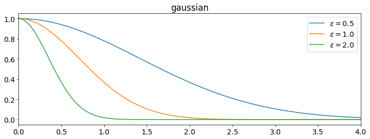

This article defines radial basis fuctions (RBFs), describes several types of RBF, and discusses their motivation and applications.
- Definition
- Examples
- Shape Parameter RBFs
- Polyharmonic Spline RBFs
- Compactly Supported RBFs
- History
- References
Definition
The definition of radial basis functions is best understood through (and motivated by) the context of interpolation. The Mairhuber-Curtis theorem [1][2] suggests that basis functions that do not depend on the sample points will be unreliable. Choosing radialy symmetric basis functions centered at the sample points avoids this.
Definition: Radial Kernel and Radial Function
A radial function is a function on the radius: $\phi: [0, \infty) \to \RR$. When a radial function is paired with a metric on a vector space $\norm{\cdot}: V \to [0, \infty)$ the function $\phi_\vec{c}: V \to \RR$ defined by $\phi_\vec{c}(\vec{x}) = \phi(\norm{\vec{x} - \vec{c}})$ is said to be a radial kernel centered at $\vec{c} \in V$. For a set of distinct points in the domain $\{\vec{x}_i\}_{i=1}^n$ the radial kernels $\{\phi_{\vec{x}_i} \}_{i=1}^n$ are said to be radial basis functions if they are linearly independent (they are a basis for their span).
If we wish to interpolate a function at a set of points then a set of radial kernels centered at those points may not be a valid basis. For example, the function $\phi(r)=r^2$ is a perfectly valid radial function but in one dimension using the standard euclidian distance, the set of functions $\{x^2, (x-1)^2, (x-2)^2, (x-3)^2\}$ are linearly dependent and thus can't be basis functions. More generally, one can guarantee a nonsingular interpolation matrix by criteria on the radial function.
A function $\psi: [0, \infty) \to \RR$ is said to be completely monotone if
- $\psi \in C[0, \infty)$
- $\psi \in C^\infty (0, \infty)$
- $(-1)^k \frac{d^k \psi}{dt^k}(t) \geq 0$ for $t>0$ and $k = 0, 1, 2, \dots$
Completely Monotone radial functions have desireable properites for the purposes of interpolation (and by extension RBF-FD).
Michelli's Theorm[4]
Let $\{\vec{x}_i\}_{i=1}^n \subseteq X$, an inner product space. Let $\psi$ be a continuous radial kernel. Definie the matrix $A_{ij} = \psi \left( \norm{\vec{x}_i - \vec{x}_j}^2 \right)$. If $\psi'$ is non-constant and completely monotone on $(0, \infty)$ then $A$ is non-singular.
When our radial function is completely monotone Michelli's theorm proves that the RBf interpolation matrix will be non-singular.
Examples
The original radial function used by Hardy [5] is the multiquadric $$ \phi(r) = \sqrt{1 + (\varepsilon r)^2}. $$ Since then many other good choices for radial functions have been discovered.
Shape Parameter RBFs
The multiquadric mentioned above has a parameter $\varepsilon$ known as the shape parameter. Generally speaking, as $\varepsilon \to 0$ the graph approaches a flat line as seen in the plot of the Gaussian below.
The following are a list of some shape-parameter RBFs used in practice. All satisfy Michelli's theorem above. \begin{align*} \textbf{Gaussian - } \phi(r)&= e^{-(\varepsilon r)^2} \\ \textbf{Multiquadric - } \phi(r)&= \sqrt{1 + (\varepsilon r)^2} \\ \textbf{Inverse Multiquadric - } \phi(r)&= \frac{1}{\sqrt{1 + (\varepsilon r)^2}} \\ \textbf{Inverse Quadratic - } \phi(r)&= \frac{1}{1+(\varepsilon r)^2} \\ \end{align*}
Polyharmonic Spline RBFs
Polyharmonic splines can be seen as a generalization of the cubic and thin-plate splines. In fact there are particular boundary conditions on cubic splines that are equivalent to RBF interpolation using $\phi(r)=r^3$ [6]. The cubic splines are of this form \begin{align*} \phi(r) & = r^{2k+1} \text{ for } k \in \NN \\ \phi(r) & = r^{2k}\log(r) \text{ for } k \in \NN \\ \phi(r) & = r^3 &\text{(cubic spline - special case)} \\ \phi(r) & = r^{2}\log(r) &\text{(thin-plate spline - special case)} \\ \end{align*}
Generally PHS RBFs have lower orders of convergence than shape parameter RBFs, however this can be remedied by adding a few low degree polynomials to the basis.
Compactly Supported RBFs
History
References
- John C. Mairhuber. On haar's theorem concerning chebychev approximation problems having unique solutions. Proceedings of the American Mathematical Society, 7(4):609–615, 1956. URL: http://www.jstor.org/stable/2033359.
- Jr. Philip C. Curtis. N-parameter families and best approximation. Pacific Journal of Mathematics, 9(4):1013–1028, 1959. URL: https://msp.org/pjm/1959/9-4/pjm-v9-n4-p04-s.pdf.
- E. Ward Cheney and William A. Light. A Course in Approximation Theory (The Brooks/Cole Series in Advanced Mathematics). Brooks Cole, 1999. ISBN 0534362249.
- Charles A. Micchelli. Interpolation of scattered data: distance matrices and conditionally positive definite functions. Constructive Approximation, 2(1):11–22, Dec 1986. URL: https://doi.org/10.1007/BF01893414, doi:10.1007/BF01893414.
- Rolland L. Hardy. Multiquadric equations of topography and other irregular surfaces. Journal of Geophysical Research, 76(8):1905–1915, 1971. URL: https://agupubs.onlinelibrary.wiley.com/doi/abs/10.1029/JB076i008p01905, arXiv:https://agupubs.onlinelibrary.wiley.com/doi/pdf/10.1029/JB076i008p01905, doi:10.1029/JB076i008p01905.
- B Fornberg, T A Driscoll, G Wright, and R Charles. Observations on the behavior of radial basis functions near boundaries. Comput. Math. Appl., 43:473–490, 2002. URL: https://math.boisestate.edu/~wright/research/rbf_paper_final.pdf.